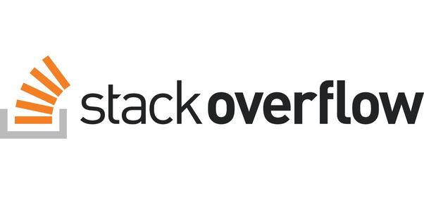
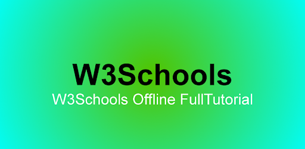

postado em 01 de maio de 2024
É um repositório de código, você pode usá-lo para guardar seu código, versionar seu código (com a ajuda do Git), estudar, trabalhar com mais desenvolvedores em projetos, etc.
No meu repositório há alguns projetos que fiz/faço enquanto estudava/estudo, se quiser pode dar uma olhada nos repositórios "finans", "notícias cidade" ou "museu nacional" para entender mais de HTML e CSS.
Meu GitHub
StackOverflow- Sua dúvida já foi respondida

É um fórum, alguém pergunta e outro alguém responde. É muito provável que sua dúvida também seja a dúvida de outra pessoa e por isso não é difícil achar respostas para suas dúvidas aqui.
Ir para StackOverFlow
W3 School - Aqui há tudo sobre o HTML
documentação HTML

Possui alguma dúvida quanto ao HMTL, CSS ou JavaScript? Aqui há uma boa documentação que te ajudará a desenvolver suas páginas na web. O conteúdo é atualizado e de fácil leitura! Aproveite!
Leia mais
NYC Brunch Squad - Empresa Meta
postado em 16 de abril de 2024
Making new friends in a new city can be hard, which is what inspired Liza created NYC Brunch Squad on Facebook and Instagram. She’s now helped hundreds of women find new friendships…with a side of brunch.